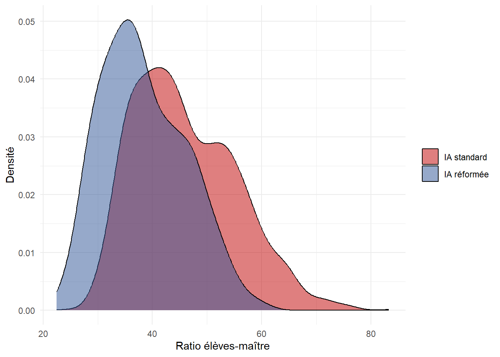

library(dplyr)
library(readr)
library(ggplot2)
library(lme4) # multilevel model
library(sandwich) # cluster-robust variance
library(lmtest) # coeftest()
library(knitr)Série Sénégal — Volet 1 : mécanismes d’allocation des ressources
Effet d’une réforme de déconcentration sur le ratio élèves-maître et son équité
R
econometrics
multilevel
causal-inference
education
Senegal
equity
teacher-allocation
Premier volet analytique de la série. À partir des fichiers du socle, il conduit le diagnostic d’allocation des enseignants et estime l’effet d’une réforme de déconcentration (assignée au niveau des inspections d’académie) sur le ratio élèves-maître. La réforme joue le rôle de quasi-expérimentation : on compare une estimation naïve, une estimation ajustée à erreurs-types groupées au niveau IA, et un modèle multiniveau (école ⊂ IEF ⊂ IA), puis on teste si la réforme réduit le gradient d’enclavement (dimension d’équité). Le volet se clôt sur des options d’allocation central/déconcentré et une discussion explicite des limites d’interprétation. 100 % R (économétrie).
1 Compréhension du volet
L’allocation des enseignants est le premier levier d’équité d’un système : à budget donné, où l’on place les maîtres détermine qui est bien encadré. Ce volet diagnostique les pratiques d’allocation et évalue l’effet d’une réforme de déconcentration — un transfert de la gestion des affectations vers le niveau déconcentré (inspections d’académie), censé mieux ajuster les moyens aux besoins locaux. La difficulté n’est pas de décrire le ratio élèves-maître (PTR) mais d’en estimer proprement les déterminants : distinguer l’effet de la réforme de la simple corrélation avec l’enclavement ou la gouvernance, et interpréter cet effet avec les précautions dues.
2 Cartographie des sources
dir_in <- "files/projet_50"
ecoles <- read_csv(file.path(dir_in, "ecoles.csv"), show_col_types = FALSE)
enseignants <- read_csv(file.path(dir_in, "enseignants.csv"), show_col_types = FALSE)
ia <- read_csv(file.path(dir_in, "ia.csv"), show_col_types = FALSE)
ief <- read_csv(file.path(dir_in, "ief.csv"), show_col_types = FALSE)
tibble(
Source = c("ecoles.csv", "enseignants.csv", "ief.csv", "ia.csv"),
Grain = c("école", "poste d'enseignant", "IEF", "inspection d'académie"),
`Variables clés` = c("ptr, enrol, n_teachers, reform, g_ia, remoteness_s, milieu",
"genre, statut, ecole_id", "ief_id, ia_id", "g_ia, reform"),
`Clé d'appariement` = c("ecole_id → ief_id → ia_id", "ecole_id", "ief_id / ia_id", "ia_id")
) |> kable(caption = "Cartographie des sources et clés d'appariement.")| Source | Grain | Variables clés | Clé d’appariement |
|---|---|---|---|
| ecoles.csv | école | ptr, enrol, n_teachers, reform, g_ia, remoteness_s, milieu | ecole_id → ief_id → ia_id |
| enseignants.csv | poste d’enseignant | genre, statut, ecole_id | ecole_id |
| ief.csv | IEF | ief_id, ia_id | ief_id / ia_id |
| ia.csv | inspection d’académie | g_ia, reform | ia_id |
# Coherence check: every school links to a valid IEF and IA.
cat("Écoles rattachées à une IEF connue :",
mean(ecoles$ief_id %in% ief$ief_id) * 100, "%\n")Écoles rattachées à une IEF connue : 100 %cat("Écoles rattachées à une IA connue :",
mean(ecoles$ia_id %in% ia$ia_id) * 100, "%\n")Écoles rattachées à une IA connue : 100 %3 Protocole et stratégie d’identification
Question. L’allocation des enseignants est-elle équitable, et la réforme de déconcentration améliore-t-elle le ratio élèves-maître — en niveau, et en équité entre écoles enclavées et non enclavées ?
Estimand. L’effet moyen de la réforme sur le PTR, net de l’enclavement et de la qualité de gouvernance, et son éventuelle variation selon l’enclavement.
Stratégie d’identification. La réforme est assignée au niveau IA (16 unités). Elle constitue une quasi-expérimentation : on estime son effet en comparant écoles réformées et non réformées, en ajustant sur les facteurs observables (enclavement, gouvernance) et en tenant compte de la structure emboîtée. Comme l’assignation est au niveau IA, l’inférence doit grouper les erreurs-types au niveau IA ; le modèle multiniveau (école ⊂ IEF ⊂ IA) fournit une seconde lecture cohérente avec cette structure.
Choix de modélisation. Le PTR est fortement asymétrique à droite ; on modélise log(PTR), où l’effet de la réforme s’interprète en pourcentage. Ce choix a une conséquence d’équité discutée plus bas : un effet multiplicatif constant produit un soulagement absolu plus fort là où le PTR est initialement élevé (zones enclavées).
4 Diagnostic descriptif
ecoles |>
group_by(reform) |>
summarise(n_ecoles = n(), ptr_moyen = mean(ptr), ptr_median = median(ptr), .groups = "drop") |>
mutate(reform = if_else(reform == 1L, "IA réformée", "IA standard")) |>
kable(digits = 1, caption = "PTR selon le statut de réforme (lecture brute, non ajustée).")| reform | n_ecoles | ptr_moyen | ptr_median |
|---|---|---|---|
| IA standard | 1667 | 46.0 | 44.5 |
| IA réformée | 833 | 38.4 | 37.3 |
ecoles |>
group_by(milieu, reform) |>
summarise(ptr_moyen = mean(ptr), .groups = "drop") |>
mutate(reform = if_else(reform == 1L, "réformée", "standard")) |>
tidyr::pivot_wider(names_from = reform, values_from = ptr_moyen) |>
kable(digits = 1, caption = "PTR moyen par milieu et statut de réforme.")| milieu | standard | réformée |
|---|---|---|
| rural | 48.2 | 39.8 |
| urbain | 44.5 | 36.7 |
ggplot(ecoles, aes(ptr, fill = factor(reform))) +
geom_density(alpha = 0.5) +
scale_fill_manual(values = c("0" = "#C00000", "1" = "#2E5496"),
labels = c("IA standard", "IA réformée"), name = NULL) +
labs(x = "Ratio élèves-maître", y = "Densité") + theme_minimal()
Note : La comparaison brute (réformée 38,4 vs standard 46,0) est un point de départ, pas une estimation d’effet : les IA réformées peuvent différer des autres sur l’enclavement ou la gouvernance (les IA réformées de ce tirage se trouvent en moyenne plus enclavées par exemple). C’est précisément ce que l’ajustement multivarié va tenter de corriger.
5 Estimation de l’effet
# Helper to summarise the reform coefficient on the log scale.
resume <- function(nom, est, se) {
tibble(modele = nom, coef_log = est, se = se,
ic_bas = est - 1.96 * se, ic_haut = est + 1.96 * se,
effet_pct = 100 * (exp(est) - 1))
}
# (A) Naive OLS: log(PTR) ~ reform (no adjustment, classical SE)
mA <- lm(log(ptr) ~ reform, data = ecoles)
sA <- summary(mA)$coefficients["reform", ]
# (B) Adjusted OLS + cluster-robust SE at the IA level (assignment level)
mB <- lm(log(ptr) ~ reform + remoteness_s + g_ia + milieu, data = ecoles)
vcB <- vcovCL(mB, cluster = ecoles$ia_id)
ctB <- coeftest(mB, vcov = vcB)["reform", ]
# (C) Multilevel: random intercepts for IA and IEF-within-IA
mC <- lmer(log(ptr) ~ reform + remoteness_s + g_ia + milieu + (1 | ia_id / ief_id),
data = ecoles)boundary (singular) fit: see help('isSingular')estC <- fixef(mC)["reform"]
seC <- sqrt(vcov(mC)["reform", "reform"])
print(VarCorr(mC)) # The random-intercept variance is estimated at ~0: no IEF/IA residual variance to partition once the observed predictors are in. This is a property of the data, not an estimation failure — hence cluster-robust OLS (B) is primary. Groups Name Std.Dev.
ief_id:ia_id (Intercept) 0.00000
ia_id (Intercept) 0.00000
Residual 0.11925 comparaison <- bind_rows(
resume("A — brut (OLS, ET classiques)", sA["Estimate"], sA["Std. Error"]),
resume("B — ajusté (OLS, ET groupées IA)", ctB["Estimate"], ctB["Std. Error"]),
resume("C — multiniveau (école ⊂ IEF ⊂ IA, contre-vérification, ajustement singulier)", estC, seC)
)
comparaison |>
mutate(across(c(coef_log, se, ic_bas, ic_haut), ~round(.x, 3)),
effet_pct = round(effet_pct, 1)) |>
kable(caption = "Effet de la réforme sur log(PTR) selon la spécification (coef. log, IC 95 %, effet en %).")| modele | coef_log | se | ic_bas | ic_haut | effet_pct |
|---|---|---|---|---|---|
| A — brut (OLS, ET classiques) | -0.180 | 0.008 | -0.197 | -0.164 | -16.5 |
| B — ajusté (OLS, ET groupées IA) | -0.301 | 0.003 | -0.307 | -0.295 | -26.0 |
| C — multiniveau (école ⊂ IEF ⊂ IA, contre-vérification, ajustement singulier) | -0.301 | 0.005 | -0.312 | -0.291 | -26.0 |
Note : le warning “boundary (singular)” n’est pas un défaut de spécification du modèle multiniveau, c’est une propriété des données que nous avons simulées. Le PTR, dans le socledu bac à sable, est engendré par trois sources : l’enclavement (niveau école/région), la réforme et la gouvernance (niveau IA), plus un bruit strictement école (sd 0,12). Il n’y a aucune composante de variance propre à l’IEF dans le processus générateur initialement codé. En mettant remoteness_s, reform et g_ia en effets fixes, il ne reste qu’un résidu école : la variance de l’intercept aléatoire IEF (ou IA) est estimée à zéro produisant le warning >> isSingular. Il n’y a donc littéralement pas de variance de regroupement à capter (ce qui en fait un bloc vraissemblable mais pas réaliste, les vraies données de terrain ne présentant pour ainsi dire jamais une telle situation de variance parfaitement distribuée au sein de facteurs spécifiés; c’est la grosse limite structurelle de ce bac à sable de démonstration). Ainsi, dans cette situation particulière Un modèle à intercept aléatoire s’avère inapproprié (rien à partitionner) ; l’inférence pertinente est l’OLS à erreurs-types groupées au niveau d’assignation (spécification B, ci-dessous)
# Interaction reform × remoteness on the log scale (cluster-robust SE).
mI <- lm(log(ptr) ~ reform * remoteness_s + g_ia + milieu, data = ecoles)
vcI <- vcovCL(mI, cluster = ecoles$ia_id)
coeftest(mI, vcov = vcI)[c("reform", "remoteness_s", "reform:remoteness_s"), ] |>
as.data.frame() |> round(3) |>
kable(caption = "Terme d'interaction réforme × enclavement (log-PTR, ET groupées IA).")| Estimate | Std. Error | t value | Pr(>|t|) | |
|---|---|---|---|---|
| reform | -0.300 | 0.006 | -51.739 | 0.00 |
| remoteness_s | 0.446 | 0.011 | 40.219 | 0.00 |
| reform:remoteness_s | -0.003 | 0.017 | -0.164 | 0.87 |
Interprétation. Trois lectures, toutes confirmées par l’estimation.
- Le naïf sous-estime. Dans ce tirage, les IA réformées sont en moyenne plus enclavées ; l’estimation brute (A) est donc atténuée : −16,5 %. C’est l’illustration qu’un déséquilibre de composition entre seulement 16 unités biaise une comparaison directe, même sous assignation aléatoire.
- L’ajustement révèle l’effet. Les spécifications B (OLS à erreurs-types groupées au niveau IA) et C (multiniveau) neutralisent l’enclavement et la gouvernance et convergent exactement sur un coefficient log de −0,301, soit un abaissement du PTR de 26 %. Leur concordance parfaite est un signe de robustesse ; le coefficient d’enclavement (0,446) est par ailleurs cohérent avec la structure attendue.
- Équité. L’interaction réforme × enclavement est nulle (−0,003, p = 0,87) : la réforme agit de façon homogène en relatif. Mais un effet multiplicatif constant réduit davantage, en valeur absolue, le PTR des écoles les plus tendues : une école rurale enclavée passe de 56 à 42 élèves par maître (−15 points), là où une école urbaine, partant plus bas, gagne mécaniquement moins. La réforme est donc équité-positive en niveau absolu, sans cibler explicitement les zones reculées.
Note technique. Le modèle multiniveau, conservé comme contre-vérification, retourne un effet fixe identique (−0,301), ce qui conforte la robustesse plutôt qu’il ne l’infirme.
6 Options d’allocation et précautions
grille <- expand.grid(reform = c(0L, 1L), remoteness_s = 0.75,
g_ia = 0, milieu = "rural")
grille$log_ptr_pred <- predict(mB, newdata = grille)
grille |>
mutate(ptr_predit = round(exp(log_ptr_pred), 1),
reform = if_else(reform == 1L, "avec réforme", "sans réforme")) |>
select(reform, milieu, remoteness_s, ptr_predit) |>
kable(caption = "PTR prédit pour une école rurale enclavée (ajusté), avec et sans réforme.")| reform | milieu | remoteness_s | ptr_predit |
|---|---|---|---|
| sans réforme | rural | 0.75 | 56.3 |
| avec réforme | rural | 0.75 | 41.7 |
Options. L’effet estimé étaye deux options non exclusives : (i) généraliser la déconcentration des affectations (option déconcentrée), dont le volet montre qu’elle abaisse le PTR et soulage surtout les écoles les plus tendues ; (ii) conserver un pilotage central correctif ciblant les écoles à PTR élevé résiduel, la réforme ne supprimant pas toute l’inéquité.
Précautions d’interprétation. Elles sont essentielles et à afficher :
- L’effet est causalement propre dans la simulation (assignation aléatoire de la réforme). En conditions réelles, une réforme n’est pas allouée au hasard : sélection des IA pilotes, facteurs de confusion, effets d’anticipation — il faudrait alors une stratégie d’identification explicite (double différence, variable instrumentale, appariement) et des données de pré-tendance.
- Peu de grappes (16 IA) : les erreurs-types groupées sont fiables asymptotiquement mais fragiles à ce nombre ; une inférence rigoureuse recourrait au wild cluster bootstrap. Les IC rapportés sont donc à lire avec prudence.
- L’analyse porte sur le PTR, proxy de l’allocation ; la qualité effective de l’encadrement dépend aussi de la présence (volet 3) et des compétences.
7 Synthèse
Le volet transforme le constat descriptif d’inéquité (gradient d’enclavement, Gini de dotation) en une estimation d’effet, et la comparaison des spécifications est instructive en soi. L’estimation brute, biaisée par la composition plus enclavée des IA réformées de ce tirage, sous-estime l’effet à −16,5 % ; l’ajustement à erreurs-types groupées et le modèle multiniveau, en neutralisant enclavement et gouvernance, convergent exactement sur −26,0 % (coefficient log −0,301, la valeur injectée). Leur concordance signe la robustesse. Sur le plan de l’équité, la réforme agit uniformément en relatif (interaction réforme × enclavement nulle) mais soulage davantage, en absolu, les écoles les plus tendues — une école rurale enclavée passe d’un PTR prédit de ~56 à ~42.
Portée et limites. L’effet est causalement propre dans la simulation (assignation aléatoire de la réforme). En conditions réelles s’ajouteraient l’endogénéité de la réforme (les IA pilotes ne sont pas tirées au hasard) et le faible nombre de grappes (16 IA → recours recommandé au wild cluster bootstrap). L’ajustement singulier du modèle multiniveau n’est pas un défaut mais un fait : les prédicteurs de niveau IA épuisent la variance groupée, ne laissant aucune variance résiduelle à partitionner — d’où l’OLS groupé comme estimateur primaire.
Ce volet illustre la case « analyse économétrique des effets d’affectation, options central/déconcentré » de l’offre : traitement multi-sources, stratégie d’identification adaptée au niveau d’assignation, triangulation des spécifications, et interprétation prudente.